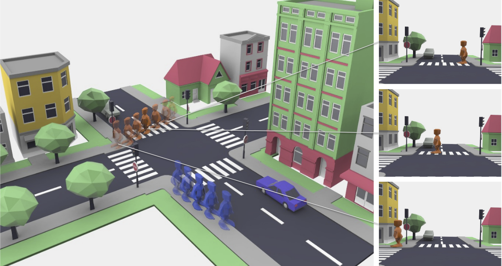
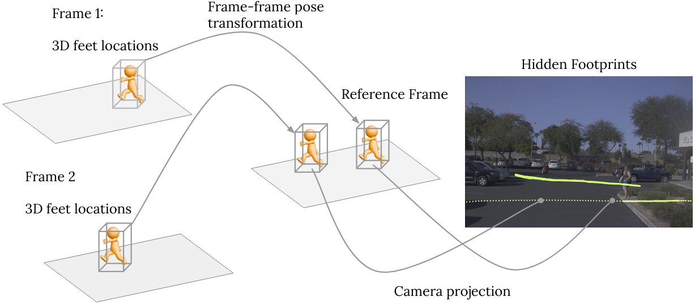
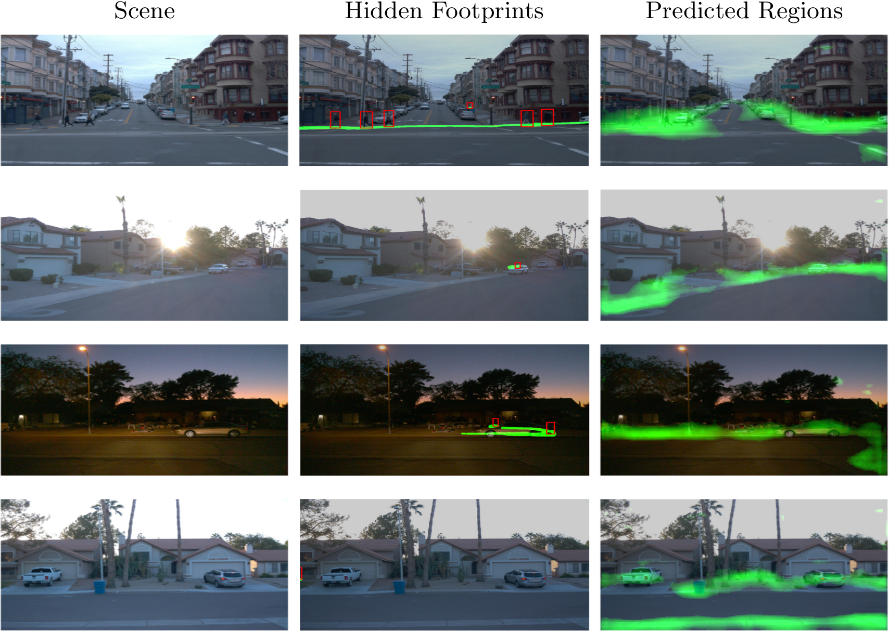

Hidden Footprints
Hidden Footprints:
Learning Contextual Walkability from 3D Human Trails
The European Conference on Computer Vision (ECCV) 2020
Abstract. Predicting where people can walk in a scene is important for
many tasks, including autonomous driving systems and human behavior
analysis. Yet learning a computational model for this purpose is chal-
lenging due to semantic ambiguity and a lack of labeled data: current
datasets only tell you where people are, not where they could be. We tackle
this problem by leveraging information from existing datasets, without
additional labeling. We first augment the set of valid, labeled walkable
regions by propagating person observations between images, utilizing
3D information to create what we call hidden footprints. However, this
augmented data is still sparse. We devise a training strategy designed for
such sparse labels, combining a class-balanced classification loss with a
contextual adversarial loss. Using this strategy, we demonstrate a model
that learns to predict a walkability map from a single image. We evaluate our model on the Waymo and Cityscapes datasets, demonstrating
superior performance compared to baselines and state-of-the-art models.
Contextual Walkability

(a) Imagine an urban scene like this one. Where could people walk in such
a scene? The answer is not simply ‘crosswalk’ or ‘sidewalk’—scene context plays
a significant role. For example, people can be standing on sidewalks and not on
crosswalks while waiting for a green light (b, top). A road can be open to walk,
or only partially walkable (e.g., when occupied by cows, as in (b, bottom)). (c)
We propose to predict where people could walk (highlighted in green) by learning
from observing human behavior in weakly annotated data.
Hidden Footprints

We leverage sequences collected by recent self-driving datasets such as the Waymo Open Dataset, without additional labeling.
Our key observation is: a person’s 3D location in each frame is also a valid location in every other frame in the same sequence.
Given 3D labels, poses, and camera parameters, we propagate sparse ground-truth people locations to all frames: obtaining what we call Hidden Footprints.
Results
We also propose a training strategy to learn from hidden footprints and predict walkability maps. The model generalizes well to diverse scenes and outperforms alternative approaches including semantics-based ones.

Below we show side-by-side video comparisons of input video sequences, propagated footprints, and our predicted heatmaps on the validation set of the Waymo dataset. Greener means higher score for walkability. Our model is able to predict reasonable walkable regions of diverse scenes, and under day/night conditions.
Please select different sequences below to play and click 'Play/Pause' for playback controls.
Bibtex
@InProceedings{hiddenfootprints2020eccv,
title={Hidden Footprints: Learning Contextual Walkability from 3D Human Trails},
author={Jin Sun and Hadar Averbuch-Elor and Qianqian Wang and Noah Snavely},
booktitle={Proceedings of the European Conference on Computer Vision (ECCV)},
month={August},
year={2020}
}
Acknowledgements
This research was supported in part by the generosity of
Eric and Wendy Schmidt by recommendation of the Schmidt Futures program.